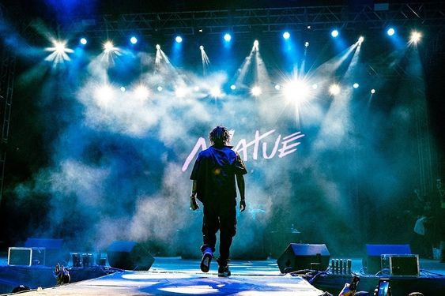

Charlie Brown Jr.
31 anos fazendo história
Yunk Vino
Flow Festival - Blumenau/SC

Matuê
30PRAUM com Teto e Wiu
31 anos fazendo história
Flow Festival - Blumenau/SC
30PRAUM com Teto e Wiu
Yunk Vino se apresenta às 20 horas neste sábado (8) na segunda parte do The Town, no Autódromo de Interlagos, em São Paulo. A edição de estreia do The Town está acontecendo neste início de setembro no Autódromo de Interlagos, em São Paulo, atraindo a atenção de todo o Brasil.
| MÚSICAS MAIS TOCADAS NO SPOTIFY - BRASIL |
|---|
| 1. Let's Go 4 |
| 2. Baile do Bruxo |
| 3. Canudinho |
| 4. Barulho do Foguete |
| 5. Piloto |
O que o Oriente tem a ver com isso? O Apanhador Só canta “Linda, louca e livre”, a banda de rap entoa “Linda, louca e mimada”. “Se for identificação, que seja inspiração, não plágio. A arte é livre”, declara Nissin, que tem como parceiros de grupo o MC Chino, o beatbox Geninho e o violinista clássico Nobru.
O grupo 1Kilo divulgou uma nota em suas redes sociais afirmando que paga royalties para os artistas desde 2020. A medida vem em resposta às acusações de que o grupo não pagaria direitos autorais aos artistas que colaboram em suas músicas. Por exemplo, o rapper Baviera afirma que não recebeu um centavo pela música “Deixe Me Ir”que está perto de conquistar 1 bilhão de streams.
| MÚSICAS MAIS TOCADAS NO SPOTIFY |
|---|
| 1. Blinding Lights |
| 2. Shape of You |
| 3. Someone You Loved |
| 4. Sunflower |
| 5. Starboy |
Em entrevista à W Magazine, o cantor The Weeknd deixou bem claro que sente que um capítulo seu está se fechando. "Estou passando por um caminho catártico agora. Está chegando um lugar e uma hora em que estou me preparando para fechar o capítulo de The Weeknd", contou. O artista afirmou que não quer largar a carreira musical.
Quando se trata de decidir quem coroar como o melhor rapper de todos os tempos, há muitas opções, e isso também depende do que você valoriza mais. Você dá mais importância à habilidade de rap, à discografia, a quantas cópias eles venderam, etc. Nomes que imediatamente vêm à mente da maioria dos fãs de hip-hop são Tupac, Jay-Z, Nas e Biggie. Eminem é alguém que alguns consideram o G.O.A.T. (melhor de todos os tempos), mas agora pode haver mais pessoas aderindo a essa ideia.
| TOP 5 ARTISTAS |
|---|
| 1. Anitta |
| 2. Alok |
| 3. Öwnboss |
| 4. Sevek |
| 5. Vintage Culture |
A marca le FLEUR*, criada pelo rapper e designer Tyler, the Creator voltou à se unir a Lacoste para uma nova coleção de Outono/Inverno de 2023, após uma colaboração de estreia em 2019 que foi extremamente popular. Apresentando peças unissex, as roupas incorporam de forma harmoniosa o design clássico que tornou a Lacoste um nome conhecido em todo o mundo, se fundindo com brilhantismo.